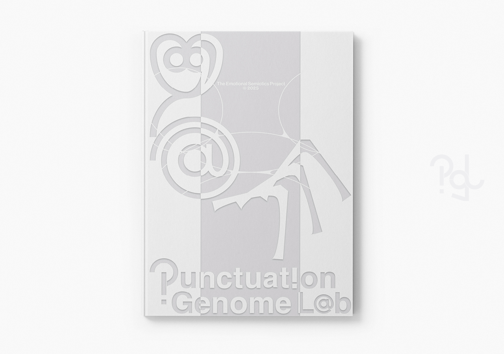
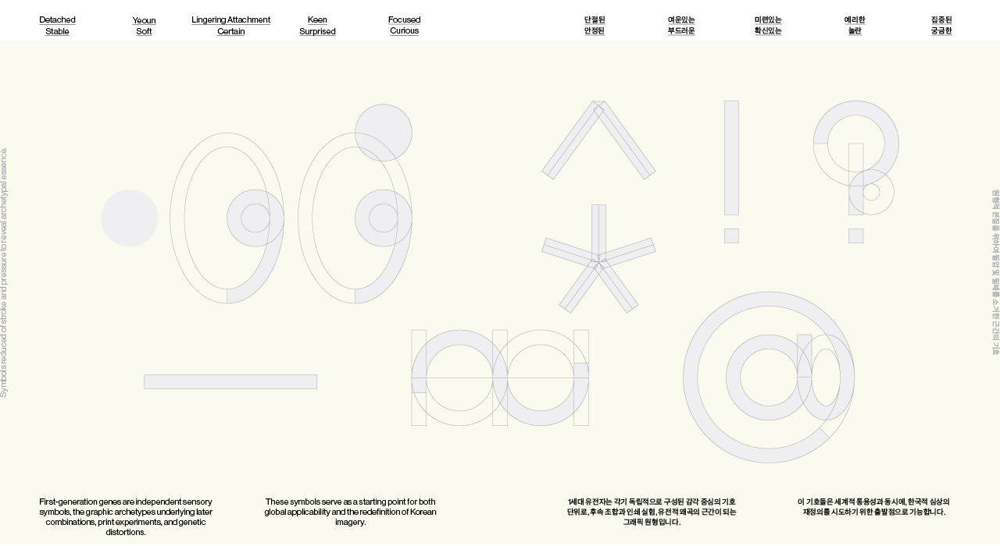
 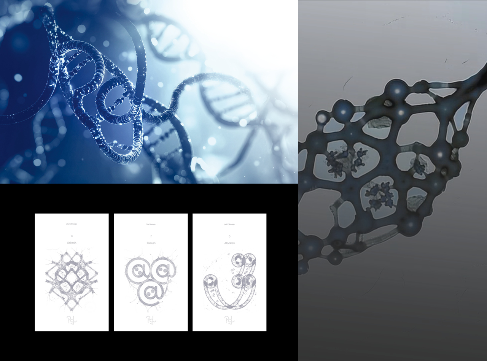
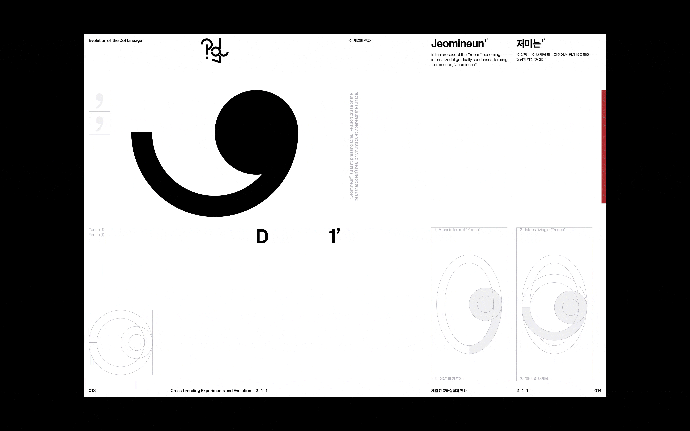
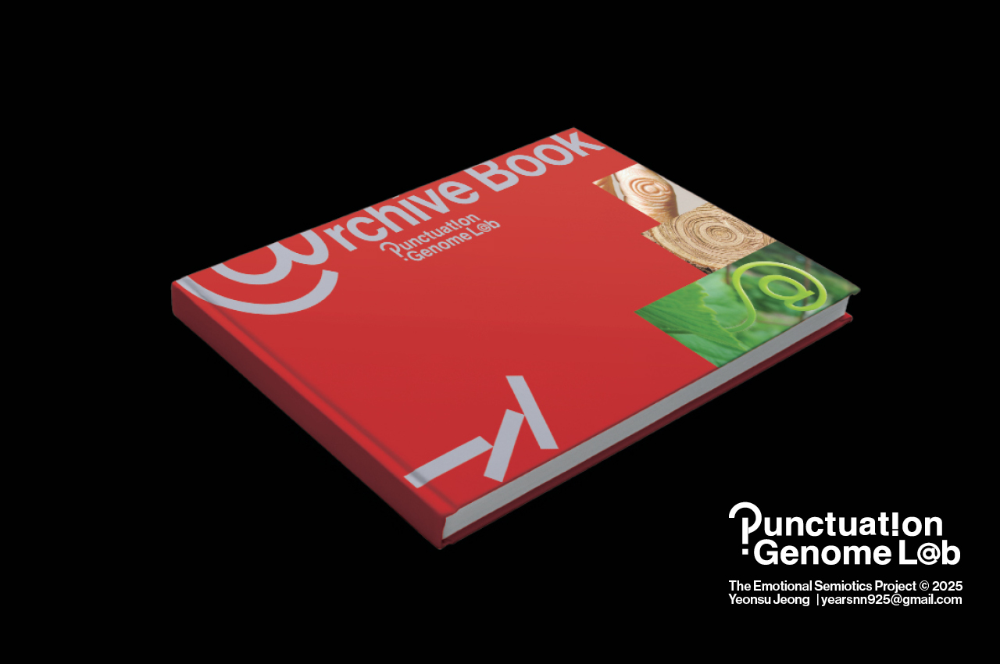
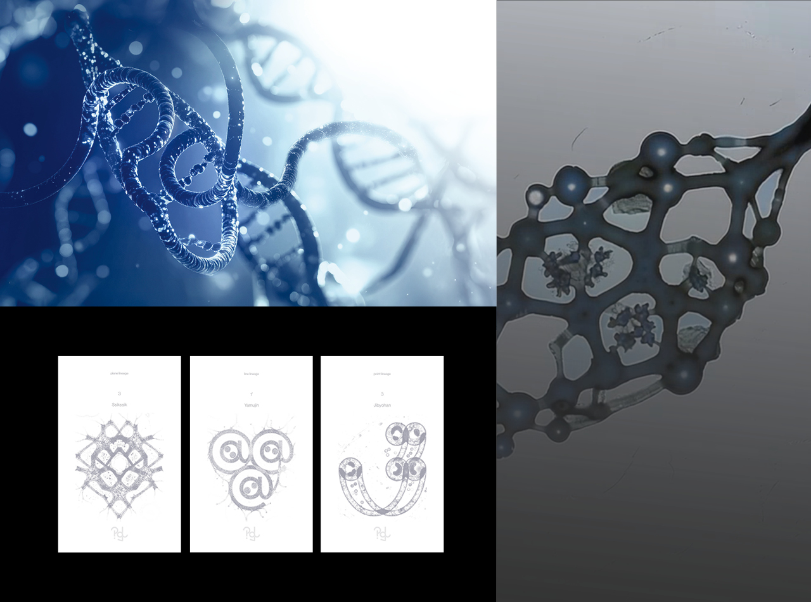
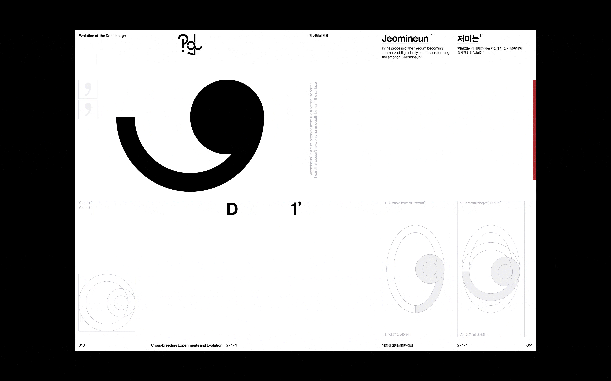
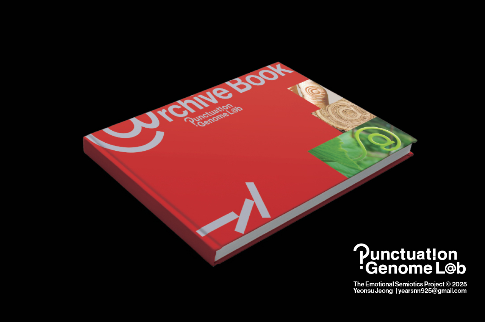
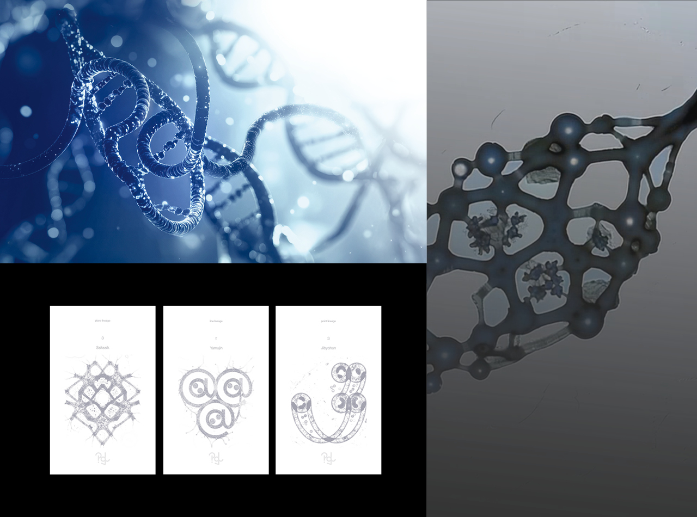
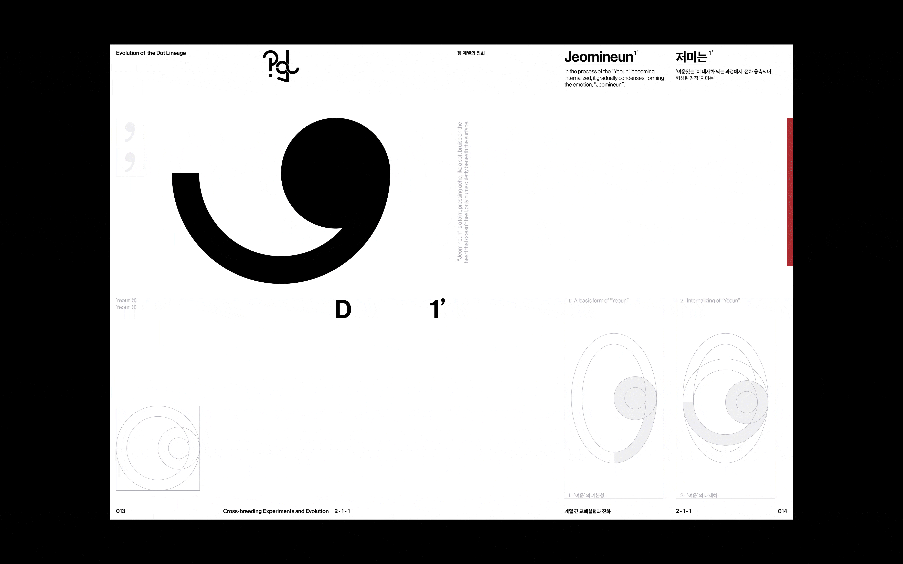
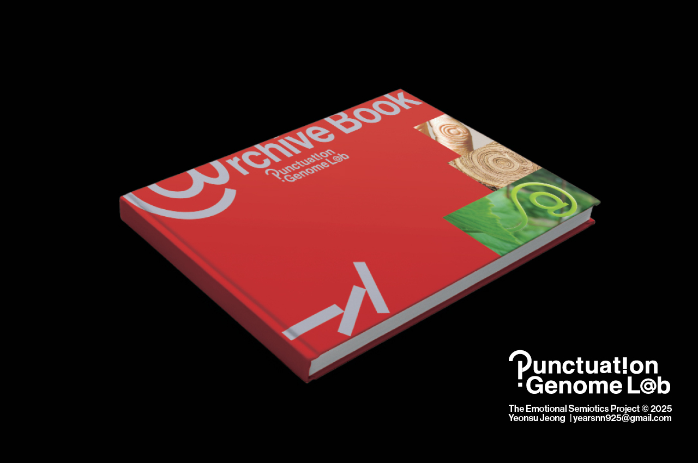
2025ⓒSeoul National University of Science and Technology.All Rights Reserved.

PGL
정연수
PGL은 무분별한 그래픽(기호) 생성 시대 속에서 문장부호를 감정의 최소 단위이자 통용적 기호로 재정의하고, 이를 유전적 메커니즘에 따라 진화시키는 과정을 통해 디자인 언어에서의 새로운 논리체계를 제안하는 프로젝트입니다.
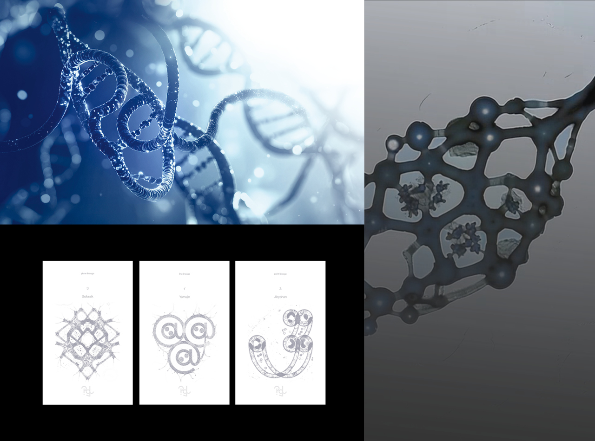
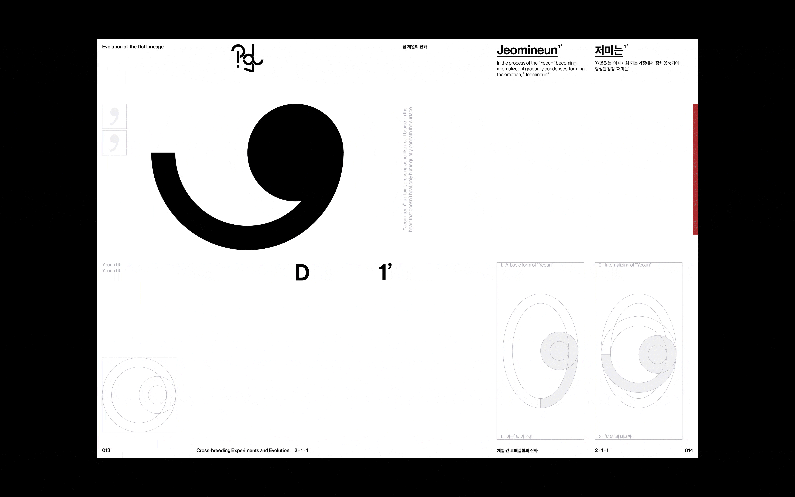
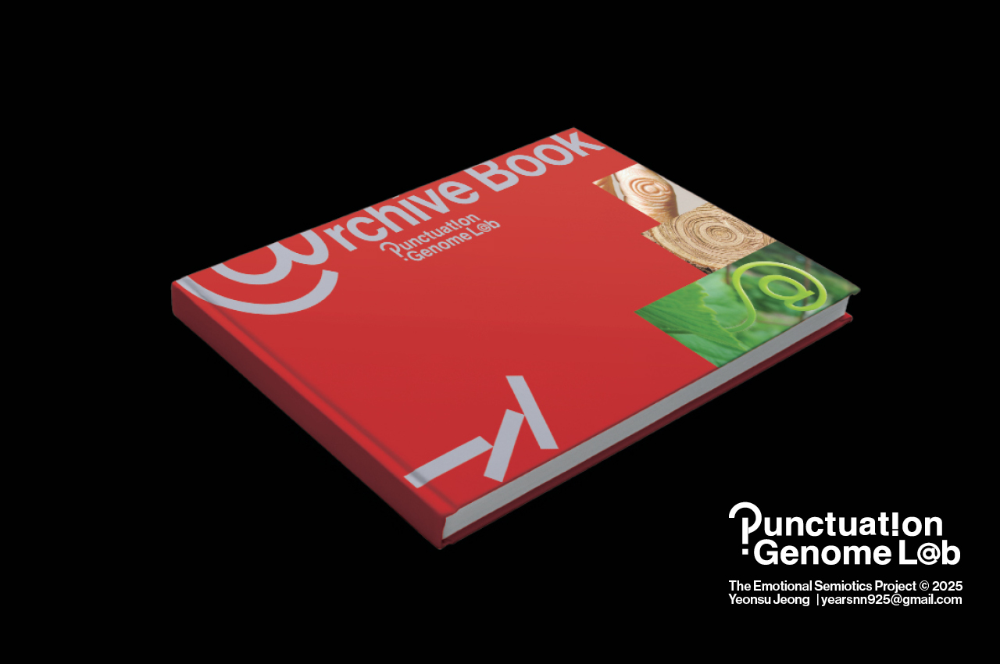
2025ⓒSeoul National University of Science and Technology.All Rights Reserved.